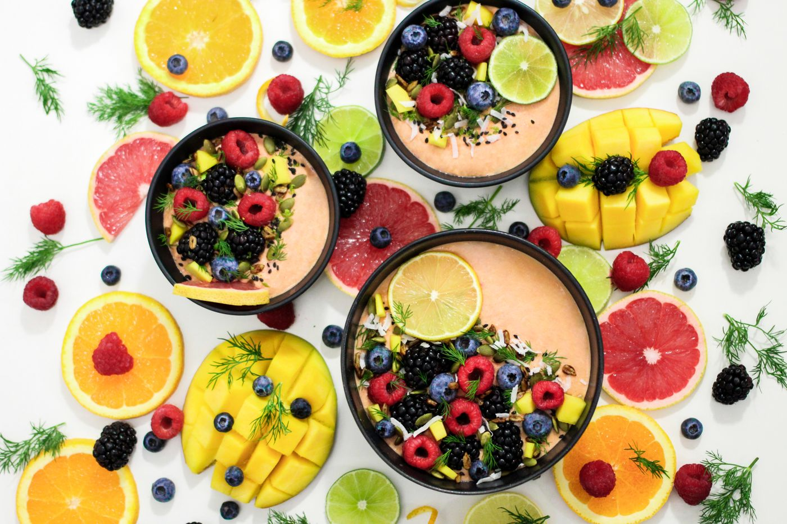

Emagrecimento saudável
Estratégia sustentável, sem dietas restritivas e com acompanhamento.
Consulta individual, plano alimentar pensado para você e acompanhamento próximo, presencial ou online.
1. Qual é o seu principal objetivo?
2. Como prefere ser atendido?
Nossa sugestão para você
Cada atendimento começa pela sua história, sua rotina e suas preferências.
Estratégia sustentável, sem dietas restritivas e com acompanhamento.
Aprenda a comer bem na rotina real, com orientação prática.
Plano alimentar alinhado ao treino e ao seu objetivo.
Atenção às necessidades de cada fase da vida.
Uma relação mais leve e consciente com a comida.
Orientação alimentar para o bem-estar do intestino.
Sem pressa e sem fórmulas prontas.
Escolha o melhor horário e o formato: online ou presencial.
Conversamos sobre histórico, rotina, preferências e objetivos.
Você recebe o plano e retornos para ajustar o que for preciso.

Dra. Marina Lopes une ciência e acolhimento para construir hábitos que cabem na sua vida.
O foco é uma alimentação sustentável, sem culpa e sem extremismos.
Você escolhe. Atendemos nos dois formatos, e o acompanhamento segue o mesmo padrão.
O plano considera suas preferências e a sua rotina, sem proibições desnecessárias.
Depende de cada pessoa. O objetivo é construir hábitos sustentáveis, e o acompanhamento ajusta o plano.
Os valores e as formas de pagamento são informados pelo WhatsApp antes de agendar.
Sim, com planos específicos. Conte o seu caso no agendamento.
Agende pelo WhatsApp. Leva menos de um minuto.
Escolha uma opção. Você confirma os detalhes no atendimento.
Usamos apenas para entrar em contato sobre o seu agendamento.
Confirmamos o horário exato pelo WhatsApp.